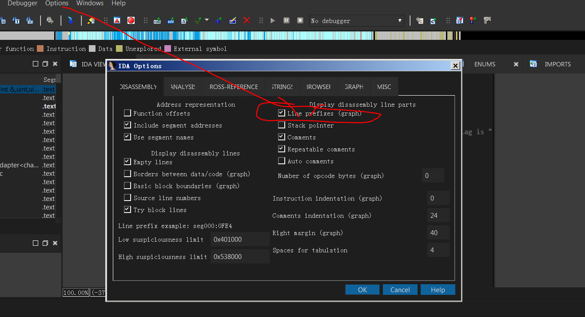

0x00 开言
最近了解了点逆向，pwn，汇编，C，C#等知识，开始试着刷题实战一下。
0x00.1 环境&工具
工具： IDA & OD
环境：Windows7
0x00.2 需要注意的事项
tips: 在windows下逆向需要注意，从windowsXP以上都有开启aslr保护，
ASLR（Address space layout randomization）是一种针对缓冲区溢出的安全保护技术，通过对堆、栈、共享库映射等线性区布局的随机化，通过增加攻击者预测目的地址的难度，防止攻击者直接定位攻击代码位置，达到阻止溢出攻击的目的。
0x01 入门逆向
使用ida打开发现没有任何值得，查看的。直接 按F5查看伪代码 再按R转码 就完事了.

0x02 Easy_vb
ida打开 直接往下看。看到flag

0x03 Easy_re
这次使用 od工具 。直接上只能搜索看看。

0x04 游戏过关
这一题比较难。
需要用到的工具:
ida & od
0x04.1 第一步 IDA
我们先用 ida 和 od 打开 程序


我们先看ida这边，先看shift+f12看看字符串
发现字符串窗口有个 done!!!the flag is 这里是最后得出flag的地方，我们先不看他，往下翻

这次我们看到 Play a game\n 这里是程序的 开头言的地方。我们双击跳过去看看。

这里有调用aPlayAGameTheNI函数。我们按x跳到，调用他的地方。
他跳到了最上面的窗口。我们往下翻

看到 input n,n 这里 是让用户输入(1-8)的地方。我们按F5看看伪代码
分析一下伪代码。
我们看到这里是给用户循环输入的地方 有个断点sub_459418();。就是我们要跳转的地方.
我们现在回到之前看到 done!!! the flag is 地方 跳转过去看一看。

看到有一个函数为 aDoneTheFlagIs,
我们打开一个选项，能直接查看到这个的 基址

我们往上翻，找到这个的Top位置
这里。0045E940我们记下来这个基址
再把

sub_459418();这里的基址记下来。
0x04.2 第二步 OD
现在我们回到 od

先这个程序运行起来。点播放键(左上角)
然后我们点Ctrl+G 来跳转地址到0045E940地方。

按F2设置断点。然后到程序里随便输入个数字(1-8),发现该程序运行到了

0045f515地址这里停住了，接下来我们用0045e940这个地址
双击0045f515地址，写上jmp 0045e940(jmp为汇编码，意思跳转)

更新程序运行。点到该程序的循环位置，为止。(0045EB51)

白框的位置便是 ｗｈｉｌｅ循环的地方
我们在0045EBC1地址设置断点 使这个程序直接跳过ｗｈｉｌｅ循环
设置断点后 点继续运行程序
拿到flag!
转载请标明出处